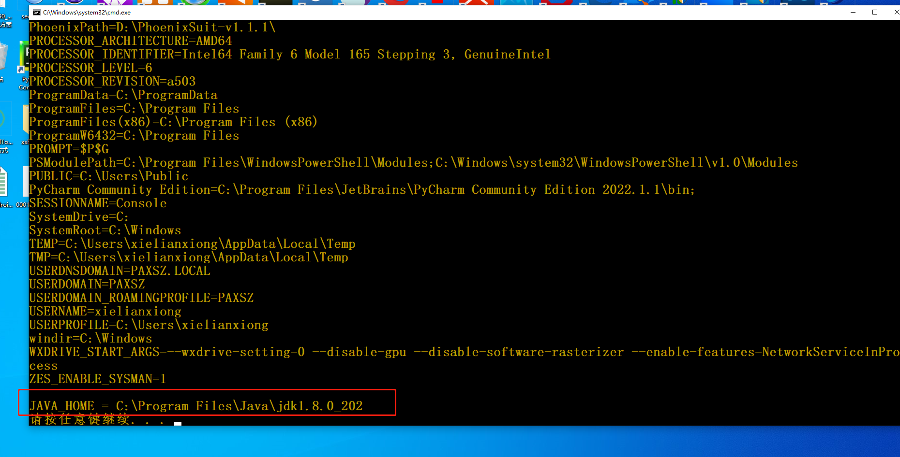

bat 语法介绍¶
由于工作中经常需要用到windows电脑,所以需要bat脚本,来执行一些自动化操作
if判断¶
if "%old_id%" == "%current_id%" (
echo no new device insert
) else (
echo new device insert,id = %current_id%
set old_id=%current_id%
::echo adb shell setprop sys.usb.config diag,serial_cdev,rmnet,adb
::adb shell setprop sys.usb.config diag,serial_cdev,rmnet,adb
echo pax_adb systool set sys.usb.config diag,serial_cdev,rmnet,adb
pax_adb systool set sys.usb.config diag,serial_cdev,rmnet,adb
)
设置变量 set¶
直接设置变量
set old_id= set current_id= set loop_count=0 set old_id=%current_id%
接收用户输入变量,enter键输入结束
@echo off set /p param=please input: echo %param% pause

系统变量¶
@echo off
::查看所有环境变量
set
echo.
::查看JAVA_HOME的值
if defined JAVA_HOME (
echo JAVA_HOME = %JAVA_HOME%
) else (
echo no defined JAVA_HOME
)
pause

逻辑运算¶
@echo off
set a=1&set b=6
set c=%a%+%b%
::输出1+6
echo %c%
set d=a+b
::输出a+b
echo %d%
set /a e=a+b
::输出7
echo %e%
pause
for循环¶
for有很多属性,举例两个稍微简单的
最普通的
@echo off ::命令框title title test-bat set str=c d e f g h i j k l m n o p q r s t u v w x y z ::当前硬盘的分区有： for %%i in (%str%) do if exist %%i: echo %%i: pause
\f
:: 读取adb device -l 的每行的第一个,第二个元素
::for /f "tokens=1,2" %%a in ('adb devices -l') do (
for /f "tokens=1,2" %%a in ('pax_adb devices -l') do (
if "%%b" == "device" set current_id=%%a
)
goto¶